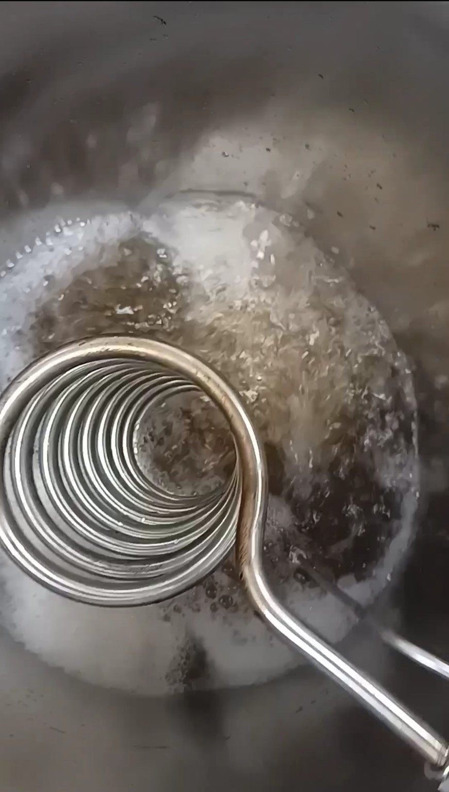
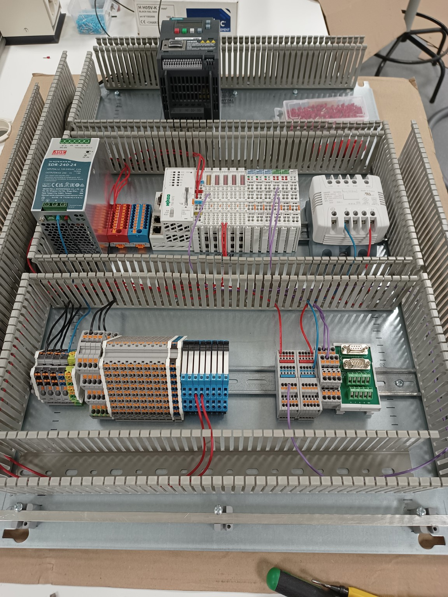

Bioprocesengineering, industriële automatisering en technische software.
Biodys BV is een klein ingenieursbureau op het snijvlak van biotechnologie, procestechniek, instrumentatie en software. We ondersteunen afgebakende technische projecten, van analyse en apparatuurselectie tot prototyping, implementatie en troubleshooting.
Bioproces- & procestechniek
Praktische engineering rond fermentatie, procesapparatuur en utilities, met aandacht voor meetbaarheid, reproduceerbaarheid en onderhoudbaarheid.
- Fermentoren en pilot-scale apparatuur
- Temperatuur-, pH-, DO- en voedingsregeling
- CIP/SIP, procesverwarming en apparatuurspecificatie

Industriële automatisering & instrumentatie
Besturings- en meetoplossingen voor procesinstallaties, waaronder upgrades van bestaande systemen wanneer vervanging van de complete installatie niet nodig is.
- PLC-programmering en I/O-integratie
- pH, DO, temperatuur, druk en andere instrumentatie
- Modbus, gateways en proceslogging

Technische software & integratie
Kleine, onderhoudbare softwaretools en interfaces voor industriële omgevingen, vooral waar machines, procesdata en bedrijfssystemen met elkaar moeten worden verbonden.
- Batchlogging en rapportage
- Embedded en Linux-gebaseerde gateways
- ERP- en machinedata-integratie
Typische projecten
Opdrachten zijn doorgaans duidelijk afgebakend en technisch gericht. Voorbeelden zijn:
- Instrumentatie en regeling van fermentoren, waaronder pH, DO en temperatuur
- Vraagstukken rond stoom, SIP en procesverwarming
- PLC-batchlogging, data-export en technische rapportage
- Industriële gateways tussen machines en ERP-systemen
- Selectie en specificatie van pompen, kleppen, sensoren en warmtewisselaars
Werkwijze
Direct contact, korte lijnen en een pragmatische aanpak. Afhankelijk van de opdracht kan het werk bestaan uit analyse, ontwerp, prototyping, leveranciersbeoordeling, ondersteuning bij implementatie of troubleshooting.
Contact
Heb je een technische vraag, een technisch project of een systeem dat beter moet worden begrepen, verbeterd of gekoppeld? Neem gerust contact op.
Biodys BV
Groningen, Nederland
E-mail: inq@biodys.com